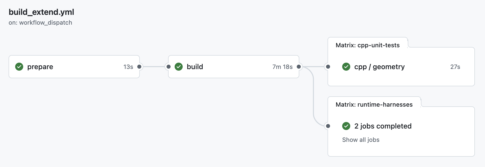

Workflow
A workflow is a GitHub Actions page that runs CI. This guide uses the Build And Check Active Harnesses workflow.
User Guide
Launch CTest coverage, mission harnesses, or both. CTest runs source-level component checks; mission harnesses run live MOOS scenarios.
Before You Run
The workflow form has two similar selection lanes. The CTest lane chooses source-level GoogleTest/CTest coverage; the harness lane chooses live MOOS mission scenarios.
A workflow is a GitHub Actions page that runs CI. This guide uses the Build And Check Active Harnesses workflow.
cpp_test_mode selects the CTest lane. Use it for source-level checks that do not need a mission scenario.
dispatch_mode selects the mission-harness lane. Use it when behavior depends on live MOOS processes, ports, timing, or vehicle motion.
Both lanes support one family or comma-separated family batches: cpp_test_family/cpp_test_families for CTest, and family/families for harnesses.
Harnesses can also run exact target keys through targets. CTest selection stays at the family level.
The workflow can run CTest only, harnesses only, or both. It rejects only the empty case where both lanes are set to none.
Normal Flow
The workflow builds once, uploads that build as an artifact, then fans out the selected CTest and harness rows. Both lanes support one family or comma-separated family batches; harnesses also support exact target keys.
Use the Open workflow button at the top of this page, then click Run workflow in GitHub. Keep the branch on main unless you deliberately want to test another branch.
Use cpp_test_mode: family_run for one component family, or batch_family_run for a comma-separated batch.
Use dispatch_mode: none to skip missions, or select family_run, batch_family_run, or specific_harnesses.
Selection Modes
| Pattern | CTest inputs | Harness inputs |
|---|---|---|
| Skip this lane | cpp_test_mode: none |
dispatch_mode: none |
| One family | cpp_test_mode: family_runcpp_test_family: geometry |
dispatch_mode: family_runfamily: waypoint_behavior |
| Family batch | cpp_test_mode: batch_family_runcpp_test_families: geometry,ivpbuild,mbutil |
dispatch_mode: batch_family_runfamilies: convoy_behavior,cutrange_behavior,waypoint_behavior |
| Exact harnesses | Use one family or a family batch. | dispatch_mode: specific_harnessestargets: cutrange_h01,waypoint_h01 |
Inputs
These examples show the same selection shapes on each side of the workflow form. Leave unused lane-specific fields unchanged; only the mode decides whether that lane runs.
dispatch_mode: none
cpp_test_mode: family_run
cpp_test_family: geometry
moos_ivp_ref: maindispatch_mode: none
cpp_test_mode: batch_family_run
cpp_test_families: geometry,ivpbuild,mbutil
moos_ivp_ref: maindispatch_mode: batch_family_run
families: convoy_behavior,cutrange_behavior,waypoint_behavior
cpp_test_mode: none
time_warp: 10
moos_ivp_ref: maindispatch_mode: family_run
family: waypoint_behavior
cpp_test_mode: none
time_warp: 10
moos_ivp_ref: maindispatch_mode: family_run
family: waypoint_behavior
cpp_test_mode: family_run
cpp_test_family: geometry
time_warp: 10
moos_ivp_ref: maindispatch_mode: specific_harnesses
targets: cutrange_h01,waypoint_h01
cpp_test_mode: family_run
cpp_test_family: geometry
time_warp: 10
moos_ivp_ref: mainGitHub's manual workflow form does not support dynamic checkboxes from repository metadata, so batch selection uses comma-separated family names and exact harness selection uses comma-separated target keys.
Selectors
Use these exact values in the GitHub Actions form. CTest values go in cpp_test_family or cpp_test_families. Harness family values go in family or families. Harness target keys go in targets.
| Selector value | Coverage area |
|---|---|
alogcheck |
ALog Check |
alogavg |
ALog Average |
alogbin |
ALog Bin |
alogcat |
ALog Cat |
alogcd |
ALog Collision Detect |
alogclip |
ALog Clip |
alogeplot |
ALog EPlot |
alogeval |
ALog Eval |
aloggrep |
ALog Grep |
aloghelm |
ALog Helm |
alogiter |
ALog Iter |
alogload |
ALog Load |
alogmhash |
ALog Mission Hash |
alogpare |
ALog Pare |
alogpick |
ALog Pick |
alogrm |
ALog Remove |
alogscan |
ALog Scan |
alogsplit |
ALog Split |
alogsort |
ALog Sort |
alogtest |
ALog Test |
alogtm |
ALog Time Mark |
apputil |
App Utilities |
behaviors |
Behavior Core |
behaviors_colregs |
COLREGS Behaviors |
behaviors_marine |
Marine Behaviors |
bhvutil |
Behavior Utilities |
contacts |
Contact Records |
dep_behaviors |
Deprecated Behaviors |
encounters |
Encounters |
evalutil |
Evaluation Utilities |
gen_moos_app |
MOOS App Generator |
genutil |
General Utilities |
geodaid |
Geodesy Aids |
geometry |
Geometry |
helmivp |
Helm IvP |
ipfview |
IPF View |
isay |
iSay |
uhelmscope |
uHelmScope |
ivpbuild |
IvP Build |
ivpcore |
IvP Core |
ivpsolve |
IvP Solve |
logic |
Logic |
logutils |
Log Utilities |
manifest |
Manifest |
marine_pid |
Marine PID |
marineview |
Marine Viewer |
mbutil |
MB Utilities |
nspatch |
NSPatch |
nsplug |
NSPlug |
obstacles |
Obstacles |
pechovar |
pEchoVar |
pickpos |
Pick Position |
pluck |
Pluck |
polar |
Polar Geometry |
prealm |
pRealm |
projfield |
Project Field |
realm |
Realm Core |
survey |
Survey Utilities |
tagrep |
Tag Replace |
turngeo |
Turn Geometry |
ucommand |
Command Utilities |
ufield |
Field Utilities |
ufldbeaconrangesensor |
uFldBeaconRangeSensor |
ufldcollisiondetect |
uFldCollisionDetect |
uflddelve |
uFldDelve |
uplotviewer |
uPlotViewer |
utimerscript |
uTimerScript |
zaicview |
ZAIC View |
| Selector value | Harness family | Harness |
|---|---|---|
cmgr_h01 |
cmgr | H01-cmgr_unit |
cmgr_h02 |
cmgr | H02-cmgr_motion |
obmgr_h01 |
obmgr | H01-obmgr_unit |
obmgr_h02 |
obmgr | H02-obmgr_motion |
pid_h01 |
pid | H01-pid_unit |
pid_h02 |
pid | H02-pid_motion |
depth_constant_h01 |
depth_behavior | H01-constant_depth_motion |
depth_goto_h02 |
depth_behavior | H02-goto_depth_motion |
depth_periodic_surface_h03 |
depth_behavior | H03-periodic_surface_motion |
depth_max_h04 |
depth_behavior | H04-max_depth_motion |
depth_min_altitude_h05 |
depth_behavior | H05-min_altitude_motion |
colregs_h01 |
colregs | H01-colregs_classification |
colregs_h02 |
colregs | H02-colregs_thresholds |
colregs_h03 |
colregs | H03-colregs_execution |
colregs_h04 |
colregs | H04-colregs_parameters |
collision_h01 |
collision_behavior | H01-collision_behavior_motion |
convoy_h01 |
convoy_behavior | H01-convoy_behavior_motion |
cutrange_h01 |
cutrange_behavior | H01-cutrange_behavior_motion |
fixedturn_h01 |
fixedturn_behavior | H01-fixedturn_behavior_motion |
legrun_h01 |
legrun_behavior | H01-legrun_behavior_motion |
loiter_h01 |
loiter_behavior | H01-loiter_behavior_motion |
obstacle_behavior_h01 |
obstacle_behavior | H01-obstacle_behavior_motion |
opregion_h01 |
opregion | H01-opregion_safety |
p01_obstacle |
performance | P01-obstacle_gauntlet |
shadow_h01 |
shadow_behavior | H01-shadow_behavior_motion |
stationkeep_h01 |
stationkeep_behavior | H01-stationkeep_behavior_motion |
trail_h01 |
trail_behavior | H01-trail_behavior_motion |
waypoint_h01 |
waypoint_behavior | H01-waypoint_behavior_motion |
p02_colregs |
colregs, performance | P02-colregs_joust |
p03_colregs |
colregs, performance | P03-colregs_traffic_ring |
There is no catch-all harness or CTest mode. Use family batches when you want a broad run, and keep the batch explicit so runtime stays predictable as coverage grows.
Interpreting Results

| Stage | What it proves |
|---|---|
prepare |
Inputs were valid and resolved into CTest and harness matrix rows. |
build |
MOOS-IvP and this repo built once, then the shared build artifact was published. |
ctest / geometry |
The selected CTest family passed and produced a JUnit report artifact. |
runtime / ... |
Each selected harness ran its case matrix and uploaded its result summary. |
prepare validates the workflow inputs and resolves CTest families and harness selections into matrix rows.build compiles once and validates the CTest registry before either test lane runs.ctest / <family> row runs the selected CTest family and uploads JUnit XML.runtime / <key> / <harness> row runs one harness zlaunch.sh and uploads results.txt.